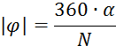

Осциллограф С1-83 и программа, имитирующая его работу
Осциллограф – прибор, показывающий форму напряжения во времени. Также он позволяет измерять ряд параметров сигнала, такие как напряжение, ток, частота, угол сдвига фаз. Но главная польза от осциллографа – возможность наблюдения формы сигнала.
Осциллограф универсальный С1-83 (рис. 1) предназначен для визуального наблюдения электрических сигналов в диапазоне частот |0 – 5| МГц путём:
- измерения амплитудных и временных параметров исследуемого сигнала;
- одновременного изображения двух исследуемых сигналов на одной развёртке;
- изображения функциональных зависимостей между двумя сигналами в режиме X – Y.
Рис.1. Осциллограф универсальный С1-83
Программа-имитатор позволяет смоделировать на компьютере работу реального осциллографа С1-83. Работа с программой позволяет ознакомиться с принципами работы осциллографа, основными видами сигналов, их характеристиками, методикой измерения характеристик сигналов.
1. Принцип действия осциллографа
«Сердцем» прибора является электронно-лучевая трубка (ЭЛТ), рис. 1.1.
Рис. 1.1. Устройство электронно-лучевой трубки с электростатическим управлением
ЭЛТ является электронной лампой, и, как и все лампы, она «заполнена» вакуумом. Катод излучает электроны, а система фокусировки формирует из них тонкий луч. Этот электронный луч попадает на экран, покрытый люминофором, который под воздействием электронной бомбардировки светится, и в центре экрана возникает светящаяся точка. Две пары пластин ЭЛТ отклоняют электронный луч в двух взаимно перпендикулярных направлениях, которые можно рассматривать как координатные оси. Поэтому для наблюдения на экране ЭЛТ исследуемого напряжения необходимо, чтобы луч отклонялся по горизонтальной оси пропорционально времени, а по вертикальной оси – пропорционально исследуемому напряжению.
На пластины горизонтального отклонения луча (расположенные вертикально) подается напряжение развертки. Оно имеет пилообразную форму: постепенно линейно нарастает и быстро спадает (рис. 1.2). Отрицательное напряжение отклоняет луч влево, а положительное – вправо (если смотреть со стороны экрана). В результате луч движется по экрану слева направо с определенной постоянной скоростью, после чего очень быстро возвращается к левой границе экрана и повторяет свое движение. Расстояние, которое проходит луч вдоль горизонтальной оси, пропорционально времени. Этот процесс называется разверткой, а горизонтальная линия, которую луч прочерчивает по экрану, называется линией развертки (иногда при измерениях ее называют нулевой линией). Она играет роль оси времени t графика. Частота повторения пилообразных импульсов называется частотой развертки, но она для измерений не используется. Для измерений нужно знать скорость развертки, про которую будет сказано ниже.
Рис. 1.2. Форма напряжения развертки
Если при этом на пластины вертикального отклонения (расположенные горизонтально) подать исследуемое напряжение, то луч начнет отклоняться и по вертикали: при положительном напряжении вверх, а при отрицательном – вниз. Движения по вертикали и по горизонтали происходят одновременно и в результате исследуемый сигнал «разворачивается» во времени. Получившееся изображение называется осциллограммой.
На самом деле кроме линейной существует еще круговая и спиральная развертки, а также фигуры Лиссажу, когда один из сигналов является разверткой для второго. Но это уже совсем другая история…
Важным моментом является соотношение частот развертки и сигнала. Если эти частоты в точности равны, то на экране отображается ровно один период исследуемого сигнала. Если частота сигнала вдвое больше частоты развертки, то мы увидим два периода, если втрое – то три. Если частота сигнала вдвое меньше частоты развертки, то мы увидим только половину периода сигнала. Частоту (скорость) развертки можно регулировать в широких пределах. Но изображение будет стабильным только в том случае, если частоты развертки и сигнала точь-в-точь совпадают. При малейшем несовпадении частот, каждое начало движения луча по экрану будет соответствовать новой точке функции входного сигнала, и ее график каждый раз будет рисоваться в новом положении. При небольшом несовпадении частот (доли герца) это будет выглядеть как график, «плывущий» влево или вправо. При несовпадении частот в несколько герц и более, осциллограмма становится нечитаемой (рис. 1.3).
Рис. 1.3. Осциллограмма при отсутствии синхронизации.
А ведь добиться абсолютно точного совпадения частот (особенно в десятки-сотни килогерц) практически невозможно. Поэтому разверткой в осциллографе управляет специальная схема синхронизации. Она задерживает начало движения луча по экрану так, чтобы луч начинал двигаться в тот момент, когда входное напряжение достигло определенного значения. В этом случае луч начинает движение (и рисование осциллограммы) каждый раз с одной и той же точки графика входного сигнала. В результате каждое следующее движение луча рисует картинку в одном и том же положении, даже если частоты сигнала и развертки заметно не совпадают. Изображение получается стабильным и устойчивым. Напряжение сигнала, при котором происходит синхронизация (уровень синхронизации), задается органами управления осциллографа. Визуально изменение этого напряжения вызывает смещение начала изображаемого графика относительно начала периода сигнала, рис. 1.4.
Рис. 1.4. Осциллограммы при разных уровнях синхронизации.
Для того чтобы можно было наблюдать несколько сигналов одновременно, выпускают многолучевые и многоканальные осциллографы. Обычно число каналов равно двум (иначе получается очень сложно и дорого). ЭЛТ двухлучевых осциллографов работает одновременно с двумя лучами на общем экране, которые позволяют наблюдать два сигнала абсолютно независимо. Но такие приборы сложны и дороги. Поэтому больше распространены двухканальные осциллографы. Их ЭЛТ самая обычная, но они имеют два отдельных входа и два независимых усилителя вертикального отклонения, которые обслуживают входные сигналы. Кроме того, они имеют встроенный высокоскоростной коммутатор, очень быстро переключающий ЭЛТ (пластины вертикального отклонения) от одного канала к другому. Изображения сигналов при этом не являются непрерывными линиями, а состоят из множества штрихов. Но на экране штрихи сливаются, и в результате получается два графика входных сигналов. Лишь при наблюдении высокочастотных сигналов и неудачной частоте развертки изображение может стать пунктирным.
2. Элементы управления осциллографа
Рассмотрим переднюю панель двухканального осциллографа С1-83 (рис. 2.1).
Рис. 2.1. Передняя панель осциллографа С1-83
А – управление каналом I.
Б – управление отображением каналов.
В – управление каналом II.
Г – регулировка яркости луча, фокусировки и подсветки экрана.
Д – управление разверткой.
Е – управление синхронизацией.
Хорошо видно, что экран осциллографа разбит на клетки. Эти клетки называются делениями, и используются при измерениях: к ним привязываются все масштабы по вертикали и горизонтали. Масштаб по вертикали – вольты на деление (В/дел или V/дел), масштаб по горизонтали секунды (милли- и микросекунды) на деление. Обычно осциллограф имеет 6…10 делений по горизонтали и 4…8 делений по вертикали. Центральные вертикальная и горизонтальная линии имеют дополнительные риски, делящие деление на 5 или 10 частей (рис. 2.2, на рис. 2.1 тоже видно). Риски служат для более точных измерений, они являются долями деления.
Рис. 2.2. Деления экрана осциллографа
Для начала рассмотрим элементы управления отображением и включения прибора (рис. 2.3)
Рис. 2.3. Управление отображением и включение осциллографа.
Ручка 1 регулирует яркость луча на экране осциллографа. С помощью ручки 2 осуществляется настройка фокусировки луча. Ручкой 3 регулируется подсветка экрана осциллографа.В программе-имитаторе ручки можно вращать при помощи ползунков, расположенных под ними .
Для включения осциллографа необходимо вытянуть ручку 4 (ВКЛ). Когда
осциллограф включён, слева от ручки горит лампочка. Чтобы приступить к работе с
программой-имитатором, по ручке 4 необходимо
кликнуть мышью.
Управление обоими каналами одинаковое. Рассмотрим его на примере канала I (рис. 2.4).

Рис. 2.4. Органы управления канала I
1. Переключатель режима входа. В верхнем положении «» на вход поступает и постоянное и переменное напряжение. Это называется «открытый вход» – то есть открытый для постоянного тока. В нижнем положении «~» на вход проходит только переменное напряжение, это позволяет измерять маленькое переменное напряжение на фоне большого постоянного, например в усилителях. Реализуется это очень просто: вход усилителя подключается через конденсатор. Это называется «закрытый вход». Учтите, что при закрытом входе очень низкие частоты (ниже 1...5 Гц) сильно ослабляются, поэтому измерять их можно только при открытом входе. В среднем положении переключателя 1 вход усилителя осциллографа отключается от входного разъема и замыкается на землю. Это позволяет при помощи ручки 7 выставить линию развертки в нужное место. В программе-имитаторе для установки переключателя нужно один раз кликнуть мышью на месте требуемого положения.
2. Входной разъем канала.
3, 4, 5, 6. Регулятор чувствительности канала вертикального отклонения
(масштаба по вертикали). Переключатель 4 задает масштаб ступенчато. Задаваемые им
значения нанесены рядом с ним. На выбранное значение указывает риска 5 на
переключателе. На рисунке она указывает на значение 0,2 вольта/деление. Ручка
3, расположенная соосно с переключателем, позволяет
плавно уменьшать масштаб в 2…3 раза. В крайнем правом положении (на рис. 2.4 ручка
«плавно» находится именно в нем) эта ручка имеет фиксацию, тогда масштаб по
вертикали в точности равен заданному переключателем 4. Значения масштабов,
выделенные скобкой 6, указаны в милливольтах на деление – об этом говорит
надпись «mV» внутри
скобки.
В программе-имитаторе переключатель 4 вращается с
помощью кнопок, расположенных справа от него: (по часовой стрелке) и (против часовой). Положение
ручки 3 задаётся положением ползунка, расположенного под переключателем (перемещение ползунка вправо соответствует вращению
по часовой стрелке).
7. Ручка выполняет две функции. При вращении она перемещает график канала по
вертикали вверх или вниз  . При «вытягивании» задает множитель масштаба по
вертикали: вытянутая ручка (рис. 2.5) задает множитель х1,
а утопленная множитель х10. Утопленное и вытянутое положения символически
показаны над и под ручкой.
. При «вытягивании» задает множитель масштаба по
вертикали: вытянутая ручка (рис. 2.5) задает множитель х1,
а утопленная множитель х10. Утопленное и вытянутое положения символически
показаны над и под ручкой.
В программе-имитаторе чтобы вытянуть или утопить
ручку необходимо по ней кликнуть. Вращение ручки обеспечивает ползунок под ней .
Рис. 2.5. Ручка множителя масштаба по вертикали вытянута в положение «х1»
Канал II (рис. 2.6) аналогичен каналу I.
Рис. 2.6. Органы управления канала II
На рисунке 2.6:
1 – переключатель режима входа;
2 – входной разъем;
3 – масштаб плавно;
4 – масштаб ступенчато;
5 – перемещение луча по вертикали и множитель масштаба.
Но второй канал имеет дополнительный переключатель 6, позволяющий инвертировать его входной сигнал. В нажатом положении канал работает как обычно, а в вытянутом – инвертируется, то есть при отрицательном входном сигнале луч движется вверх, а при положительном – вниз. Это необходимо при измерении, например, сдвига фаз.
На рис. 2.7 показано управление отображением каналов, которое определяется нажатием на одну из кнопок.
Рис. 2.7. Управление отображением каналов
1 – Работает только канал I, канал II отключен.
2 – Оба канала отображаются одновременно (луч очень быстро переключается между каналами) и взаимное положение осциллограмм обоих каналов верное. В этом режиме можно измерять сдвиг фаз.
3 – Осциллограф показывает сумму или разность сигналов в каналах (знак второго канала определяется положением ручки 6 на рис. 2.7).
4 – Отображаются сигналы обоих каналов, но они независимы во времени, поэтому никакое сравнение сигналов относительно времени и сдвига фаз производить нельзя.
5 – Работает только канал II, канал I отключен.
В программе-имитаторе кнопки включаются и отключаются путём нажатия на них мышью. Включённая кнопка имеет зелёный цвет
Панель управления разверткой (рис. 2.8) похожа на панель управления каналом вертикального отклонения луча
.Рис. 2.8. Органы управления разверткой
Панель управления развёрткой содержит ручку 4, позволяющую сдвигать изображение влево-вправо и комбинированный регулятор (1 – ступенчато, 3 – плавно) скорости развертки (масштаба по горизонтали). Риска 2 на переключателе показывает установленное значение. Как и в каналах вертикального отклонения, переключатель скорости развертки имеет разные единицы измерения: секунды s, миллисекунды ms, микросекунды µs. Вытянутая/утопленная ручка 4 «» задает множитель скорости развертки х0,2 и х1 соответственно. Обратите внимание: на рис. 2.8 ручка 3 регулирования скорости развертки «плавно» установлена не в крайнее правое положение. Значит, скорость развертки не равна значению, заданному переключателем 1, а меньше него (скорость движения луча меньше, а значение время/деление больше!).В программе-имитаторе переключатель 1 вращается при помощи кнопок и слева от него, а ручки 2 и 4 с помощью ползунков , находящихся под ними. Перевод ручки 4 в вытянутое/утопленное положение осуществляется путём нажатия на неё.
На панели управления синхронизацией (рис. 2.9) задается:
Рис. 2.9. Органы управления синхронизацией
1 – Источник внутренней синхронизации: напряжением какого канала синхронизируется движение луча. Эта синхронизация производится входным сигналом, поэтому называется внутренней. Такой режим используется для большинства измерений. Варианты здесь такие: либо синхронизация только сигналом канала I. Либо попытка синхронизации от канала I, а если не получается, то синхронизация производится сигналом канала II. Первый вариант иногда работает немного лучше, поэтому надо стараться, чтобы сигнал первого канала был достаточно большой для стабильной синхронизации. В подавляющем большинстве случаев для нормальной работы следует выбирать именно этот режим синхронизации, включив кнопку «I».
2 – Внешняя синхронизация. Движение луча синхронизируется импульсами,
подаваемыми со специального внешнего источника на вход синхронизации
осциллографа. Такой режим иногда требуется для исследования специфических
сигналов. Если внешнего источника синхронизации нет, то получить устойчивое
изображение невозможно. Кнопки «0,5-5» и «5-50» задают диапазон входных
напряжений от внешнего источника синхронизации. Кнопка «X-Y» совместно с
кнопкой «II X-Y» управления отображением каналов (рис. 2.7) подает сигнал
канала I на пластины горизонтальной развертки. В этом режиме можно наблюдать
фигуры Лиссажу.
В режиме внешней синхронизации (кроме режима X-Y) в программе-имитаторе частота внешнего синхронизирующего
сигнала задаётся в герцах с помощью поля ввода справа:
* Программа-имитатор также поддерживает режим
однократной развёртки. В этом режиме синхронизация отсутствует, а на экране всё
время отображается только самый первый период развёртки сигнала. Для включения
этого режима ставится галочка:
. На настоящем осциллографе С1-83 этот режим
невозможен.
3 – Ручка «Уровень синхронизации». Задает напряжение синхронизации (рис. 1.4).
В нажатом положении этой ручки (как на рисунке) развертка автоматическая. При
этом движение луча будет происходить даже если
синхронизации не произойдет. Луч задерживается в начале движения на некоторое
время до момента синхронизации, но через некоторое время все равно начинает
движение. Это «мягкий» режим, более удобный для работы, так как луч всегда
остается видимым. В вытянутом положении ручки включается ждущая развертка. В
этом режиме луч не начнет движения до тех пор, пока не произойдет
синхронизации. Если синхронизации не происходит, луч не движется. Такой режим
хорошо подходит для наблюдения непериодических сигналов. Влияние этой ручки на
изображение показано на рис. 1.3 и 1.4.
4 – «Полярность» синхронизации. На самом деле знаки «+» и «-» означают несколько другое. В положении «+» синхронизация происходит по фронту, т.е. в тот момент, когда входное напряжение достигает заданного (ручкой «Уровень синхронизации») значения при нарастании входного напряжения (изменении от «-» к «+»), рис. 2.10. В положении «-» синхронизация происходит по спаду – при убывании входного напряжения (изменении от «+» к «-»). В осциллографе в цепи синхронизации используются две различные схемы: одна определяет равно ли входное напряжение заданному и если равно – запускает движение луча. Это напряжение задается ручкой «Уровень синхронизации». Вторая схема определяет, как при этом изменяется входное напряжение – возрастает или убывает. И соответственно разрешает первой схеме сработать.
5 – Режим входа синхронизации. Относится как к внешней, так и ко внутренней синхронизации. В положении «~» вход закрытый,
и синхронизация происходит только от переменного напряжения. В положении «» вход
открытый, и на срабатывание схемы синхронизации действует и переменное
напряжение, и постоянное. Режим «НЧ» то же самое, но сигнал попадает на цепь
синхронизации через фильтр низких частот, обрезающий высокочастотные помехи.
Это режим есть не во всех осциллографах.
В программе-имитаторе предполагается, что синхронизация
осуществляется идеальными прямоугольными импульсами, так что эта группа кнопок
в ней не работает.
6 – Вход для подачи сигнала внешней синхронизации.
Рис. 2.10. «Полярность» синхронизации
3. Создание сигналов в программе-имитаторе
Программа-имитатор позволяет подавать 7 различных типов моделей сигналов на каждый из каналов. Для выбора типа сигнала и задания его характеристик служат окошки «Входной сигнал канала I» и «Входной сигнал канала II». Окошки полностью одинаковы. Для отображения на экране окошка «Входной сигнал канала I» необходимо нажать на кнопку , а «Входной сигнал канала II» . Внешний вид окошка представлен на рис. 3.1.
Рис. 3.1. Окошко задания параметров подаваемого на осциллограф сигнала
Сверху выбирается требуемый тип сигнала, а затем в поля снизу вводятся числовые значения параметров этого сигнала. Если «осциллограф» включён, при изменении параметров, изображение на экране будет меняться тут же. Краткую информацию о типе сигнала можно получить, нажав на кнопку . Откроется новое окно, в котором будет представлен типичный график сигнала данного типа и основные формулы.
Поддерживаются следующие типы сигналов:
1) «Нет сигнала». Этот тип сигнала эквивалентен тому, что вход осциллографа подключён к земле (напряжение 0 В).
2) «Гармонический сигнал» (рис.3.2)
Рис. 3.2. Гармонический сигнал U(t)
На рис. 3.2: Uc – амплитуда, fc – частота, T – период, φ0 – начальная фаза.
3) «Амплитудная модуляция» (рис. 3.3)
Рис. 3.3. Амплитудно-модулированный сигнал U(t)
На рис. 3.3: Uc (Umax) – максимальное значение сигнала, Umin – минимальное значение сигнала, fc – частота несущего колебания, fm – частота модулирующего сигнала, m – коэффициент (глубина) модуляции.
4) «Частотная модуляция» (рис. 3.4)
Рис. 3.4. Частотно-модулированный сигнал U(t)
На рис. 3.4: Uc – амплитуда, fc – средняя частота, df – величина, на которую частота может отклоняться от средней, Tf – период изменения частоты
5) «Фазовая модуляция» (рис. 3.5)
Рис. 3.5. Фазово-модулированный сигнал U(t)
На рис. 3.5: Uc – амплитуда, fc – частота, Δφ– величина, скачка фазы, Tf – время между скачками фазы
6) «Одиночные импульсы» (рис. 3.6)
Рис. 3.6. Одиночные импульсы
На рис. 3.6: Uc – величина импульсов, T – расстояние между соседними импульсами, τ – длина импульса.
7) «Пачка импульсов» (рис. 3.7)
Рис. 3.7. Пачка импульсов
На рис. 3.7: Uc – величина импульсов, T – расстояние между соседними пачками импульсов, τ – длина импульса, Ti - расстояние между соседними импульсами в пачке, N – число импульсов в пачке.
7) «Пара импульсов» (рис. 3.8)
Рис. 3.7. Пачка импульсов
На рис. 3.7: Uc – величина импульсов, T – расстояние между соседними парами импульсов, τ – длина первого импульса в паре, τ2 – длина второго импульса в паре, Ti - расстояние между импульсами в паре.
Любой заданный сигнал можно сохранить в базу данных. Для этого в окне генератора в колонке справа необходимо
выбрать пункт "Новый сигнал". Далее верхней части окна нужно ввести имя сигнала и нажать на кнопку "Сохранить"
в нижней части окна. Сохранённый сигнал попадёт в список в колонке справа.
Для того чтобы выбрать ранее сохранённый сигнал, необходимо кликнуть по нему в колонке в правой части окна генератора.
После этого все параметры сигнала автоматически выставятся, и сигнал тут же будет подан на вход осциллографа. Также у
ранее сохранённого сигнала можно изменить параметры. Для этого после выбора сигнала из списка необходимо поменять для
него интересующие параметры и нажать кнопку "Сохранить". Кроме того, сохранённый сигнал можно удалить из базы данных
путём нажатия на кнопку "Удалить".
4. Методика измерения осциллографом
Измерения производятся визуально и их погрешность получается довольно высокой. Кроме того, напряжение развертки имеет невысокую линейность, поэтому погрешность измерения частоты и сдвига фаз может достигать 5%. Для минимизации погрешности, изображение должно иметь размер 80…90% от размеров экрана. При измерении напряжения и частоты (временных интервалов) необходимо ручки плавной регулировки усиления входного сигнала и скорости развертки установить в крайнее правое положение.
4.1. Измерение напряжения
Для измерения напряжения используется известное значение масштаба по
вертикали. Перед началом измерения необходимо установить
переключатель режима входа в положение ) и ручкой  установить линию
развертки на горизонтальную линию сетки экрана, чтобы была возможность
правильно определить высоту осциллограммы, рис. 4.1а.
установить линию
развертки на горизонтальную линию сетки экрана, чтобы была возможность
правильно определить высоту осциллограммы, рис. 4.1а.
После этого на вход подается исследуемый сигнал (или переключатель режима входа устанавливается в одно из рабочих положений). На экране появляется график функции сигнала, рис. 4.1б.
Рис. 4.1. Измерение напряжения (снимок экрана программы-имитатора): а – подготовка; б – измерение.
Для того чтобы точнее измерить высоту графика, осциллограмма сдвигается ручкой так, чтобы точка, в которой измеряется амплитуда попала на центральную вертикальную линию, имеющую градуировку в долях деления (рис. 4.2). Получаем: чувствительность канала вертикального отклонения = 0,5 В/дел, размер осциллограммы 3,4 деления, выставлен множитель масштаба x10. Следовательно, амплитуда сигнала составляет 17 вольт.
Рис. 4.2. Определение амплитуды сигнала.
Продемонстрируем измерение напряжения на самом осциллографе. Максимум напряжения имеет величину 3,4 деления (рис. 4.3). Определение масштаба по вертикали показано на рис. 4.4. Ручка «плавно» установлена в крайнее правое положение. Риска на переключателе чувствительности показывает 0,5 вольт/деление. Множитель масштаба установлен в положение х10 (утоплен). Следовательно, измеряемое напряжение равно:

Рис. 4.3. Определение амплитуды на осциллографе С1-83.

Рис. 4.4. Определение масштаба по вертикали на осциллографе С1-83.
4.2. Измерение частоты
Осциллограф позволяет измерять временные интервалы, в том числе и период сигнала. Частота сигнала обратно пропорциональна его периоду. Период сигнала можно измерять в различных частях осциллограммы, но наиболее удобно и точно измерять его в точках пересечения графиком оси времени. Поэтому перед измерением линию развертки необходимо установить на центральную горизонтальную линию сетки экрана (рис. 4.1а).
Рис. 4.5. Измерение периода сигнала.
При помощи ручки начало периода совмещается с вертикальной линией сетки, рис. 4.5 (лучше всего начало периода совмещать с самой левой вертикальной линией экрана, тогда точность будет максимальна). Период сигнала, показанного на рис. 4.5 равен 2 делениям. Скорость развертки – 1 мс/деление. Тогда период сигнала
и его частота:
4.3. Измерение сдвига фаз
Сдвиг фаз показывает взаимное расположение двух колебательных процессов во времени. Но его измеряют не в единицах времени (которые откладываются по горизонтальной оси), а в долях периода сигнала (т.е. в единицах угла). В этом случае одинаковому взаимному расположению сигналов будет соответствовать одинаковый фазовый сдвиг, независимо от периода и частоты сигналов (т.е. независимо от реального масштаба графиков по оси времени). Поэтому наибольшая точность измерений получается, если растянуть период сигнала на весь экран.
Поскольку в аналоговом осциллографе графики сигнала обоих каналов имеют одинаковый цвет и одинаковую яркость, то для того, чтобы их различать между собой, рекомендуется сделать их разной амплитуды. При этом напряжение, измеряемое каналом I прибора, лучше делать большим – в этом случае синхронизация будет лучше «держать» изображение. Подготовка к измерениям производится так (см. рис.4.6, на нем для большей наглядности напряжение и ток показаны разными цветами):
- Ручками
 обоих
каналов их линии развертки устанавливаются на среднюю линию сетки экрана
(при отсутствии сигналов на входах).
обоих
каналов их линии развертки устанавливаются на среднюю линию сетки экрана
(при отсутствии сигналов на входах). - Ручками регулировки усиления каналов вертикального отклонения (ступенчато и плавно) сигнал 1-го канала устанавливается большой амплитуды, а 2-го канала – меньшей амплитуды.
- Ручками регулировки скорости развертки устанавливается такая ее скорость, чтобы на экране отображался примерно один период сигнала.
- Ручкой «Уровень синхронизации» добиваются того, чтобы график напряжения начинался с оси времени (с линии развертки) – точка А.
- Ручкой добиваются того, чтобы график напряжения начинался с крайней левой вертикальной линии сетки экрана – точка А.
- Ручками «Скорость развертки» (ступенчато и плавно) добиваются того, чтобы период графика напряжения заканчивался на крайней правой вертикальной линии сетки экрана.
- Повторяют пункты 4…6 до тех пор, пока период графика напряжения не будет растянут на весь экран, причем его начало и конец должны совпадать с линией развертки (рис. 26).
Прежде, чем измерять величину сдвига фаз, необходимо определить, какой из сигналов (напряжение или ток) опережает, а какой отстает. От этого зависит знак угла сдвига фаз φ. На рис. 26а ток отстает от напряжения – начало его периода расположено во времени позже, чем начало периода напряжения (начало периода напряжения в точке А, а периода тока – в точке Б). Ток начинается позже, следовательно, он отстает, а напряжение опережает. Этой ситуации соответствуют положительные значения угла сдвига фаз. На рис. 26б ток опережает, а напряжение отстает. Поскольку начало периода тока на экране не отображается, то сравниваются окончания первого полупериода: первым к нулю вернется тот график, который начался раньше (точка Г наступает раньше во времени, чем точка В). Угол сдвига фаз при этом отрицателен.
Рис. 4.6. Ток отстает от напряжения, φ>0 (а); ток опережает напряжение, φ<0 (б).
Модуль угла сдвига фаз φ это расстояние между началами или между концами периода (положительного полупериода) сигналов в делениях сетки экрана (рис. 4.7). Далее значение модуля φ находится из пропорции, учитывая, что один полный период любого колебания равен 360 градусов:

здесь N – число делений сетки, занимаемых одним периодом сигнала,
α – число делений сетки между началами периодов
(концами положительного полупериода).
В примере на рис. 18 модуль φ в обоих случаях
равен:
Следует учитывать, что для пассивного элемента (в смысле, не усилителя или транзистора, а резистора - катушки - конденсатора) сдвиг фаз

Рис. 4.7. Измерение угла сдвига фаз.
В принципе, величину сдвига фаз можно измерить и в конце периода (точки Д и Е на рис. 26), но в правой части экрана линейность
напряжения развертки наихудшая, поэтому погрешность измерения будет
максимальна.
Если сдвиг фаз равен нулю (в цепи только активная нагрузка или происходит
резонанс), то напряжение и ток будут начинаться и заканчиваться одновременно,
рис. 4.8.
Рис. 4.8. Осциллограмма при сдвиге фаз, равном нулю.
5. Технические характеристики осциллографа С1-83
|
Параметры |
Значения |
|||
|
Число каналов вертикального отклонения |
Два |
|||
|
Измерение напряжений |
400 мкВ … 200 В |
|||
|
Измерение временных интервалов |
400 нс … 20 с |
|||
|
Наблюдение напряжений |
200 мкВ … 200 В |
|||
|
Наблюдение временных
интервалов |
100 нс … 20 с |
|||
|
Режимы работы каналов вертикального отклонения |
Канал I, прерывистый, |
|||
|
Полоса пропускания канала горизонтального
отклонения в режиме Х-У |
0 … 2 МГц |
|||
|
Разность фаз между каналами в режиме Х-У (в диапазоне частот 0…100 кГц) |
Не более 2° |
|||
|
Время нарастания |
Во всех положениях переключателей |
Не более 70 нс |
||
|
В положениях «1 мВ» и «2 мВ» |
Не более 175 нс |
|||
|
При последовательном соединении |
Не более 350 нс |
|||
|
Параметры |
Каналов I и II |
Без делителя |
Входное сопротивление |
1 ±0.02 МОм |
|
Входная емкость |
35 ±5 пФ |
|||
|
С выносным |
Входное сопротивление |
10 ±0.75 МОм |
||
|
Входная емкость |
Не более 15 пФ |
|||
|
Входа внешней |
При нажатой |
Входное сопротивление |
Не менее 35 кОм |
|
|
Входная емкость |
Не более 30 пФ |
|||
|
При нажатой |
Входное сопротивление |
Не менее 650 кОм |
||
|
Входная емкость |
Не более 10 пФ |
|||
|
Входа канала Z |
Входное активное сопротивление |
Не менее 80 кОм |
||
|
Входная емкость |
Не более 55 пФ |
|||
|
Предел допускаемой основной |
При размере изображения 5.5…6 дел. |
3% |
||
|
При размере изображения от 4 до 8 дел. |
4% |
|||
|
С выносным делителем 1:10 |
6% |
|||
|
Максимальная амплитуда |
На входе каналов I и II |
Не более 160 В |
||
|
На входе делителя 1:10 |
Не более 200 В |
|||
|
При |
Без делителя |
Не более 1.6 В |
||
|
При использовании |
Не более 16 В |
|||
|
Внутренний калибратор |
Форма сигнала |
П-образные импульсы |
||
|
Частота следования |
1 кГц |
|||
|
Амплитуда |
0.03; 0.3; 1 В |
|||
|
Предел |
Напряжения |
1.5% |
||
|
Частоты |
1.5% |
|||
|
Режимы работы генератора развертки |
Автоколебательный, ждущий |
|||
|
Условия эксплуатации |
Температура окружающей среды |
–30 … 50 °С |
||
|
Относительная влажность |
До 98% |
|||
|
Атмосферное давление |
630 … |
|||
|
Общие характеристики |
Питание от сети переменного тока напряжением |
220 ±22 В |
||
|
Потребляемая мощность |
Не более 50 В·А |
|||
|
Непрерывная работа в рабочих условиях |
Не менее 16 ч |
|||
|
Габаритные размеры |
438 × 303 × |
|||
|
Масса прибора |
Не более |
|||
Используются материалы с сайта http://www.electroclub.info/article/oscillograf.htm